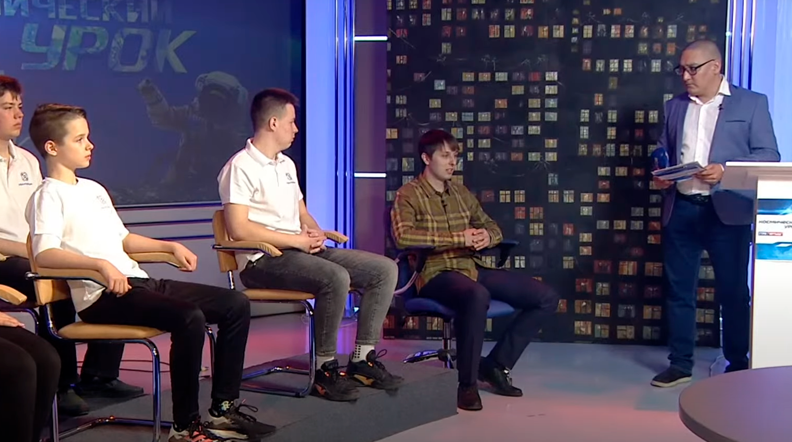
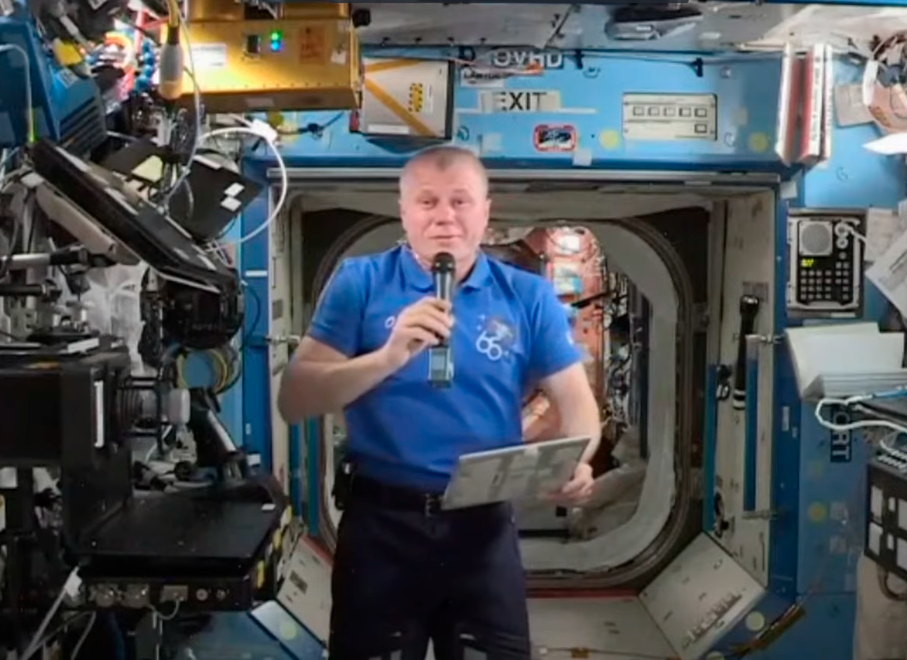
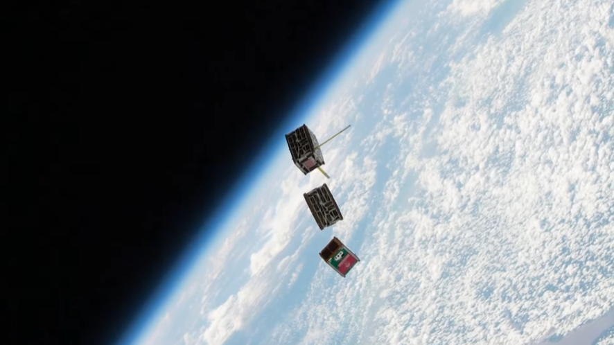

Космический урок 2021 🚀
итоги космо-урока
подведены организаторами на прямой трансляции 1:09:00
Космический урок
Мероприятие, проводимое совместно с ГК “Роскосмос”, ПАО “РКК “Энергия” и ВГТРК г. Томска. В рамках космического урока у участников была возможность представить свои разработке по проекту “Рой наноспутников” и задать вопросы космонавтам на борту Международной космической станции.
Мероприятие было приурочено к 60-ти летию первого полета человека в космос
Мероприятие проходило в городе Томске на "Центральной площадке" 22 апреля 2021 года в 10:30 по московскому времени

Итоги урока
Ведущим в программе выступил Егор Буценко
преподаватель Томского государственного
педагогического университета
Всего было проведено
2 Космических урока, во втором
уроке основной задачей участников было представление
моделей роя спутников в качестве презентации
участники использовали и видео, и реальные 3D
модели будущих аппаратов
Ниже представлены итоги космического урока
все участники космического урока получили сертификаты,
подписанные лично космонавтами, такжзе участники
были приглашены на космическую викторину. Эксперты
принившие участие в уроке продолжили работу с
участниками и продолжили анализ идей

Федорович Полещук
На уроке проектные команды из Кванториумов
Омска, Томска и Королева, а также Кемеровского
Центра «УникУм» в прямом эфире представляли
свои проекты и модели малых космических аппаратов
для роя перед авторитетными экспертами в области
космонавтики.
У каждой команды есть свой профиль, кто-то
занимался разработкой корпуса спутника,
кто-то работал над контейнером полезной
нагрузки и программным обеспечением для
спутников. Команда Омских кванторианцев
трудилась над созданием двигательных установок
для спутника МКА.

Рой спутников
На уроке выступали эксперты: Герой России,
летчик-космонавт РФ Александр Федорович
Полещук и советник генерального директора
Ракетно-космической корпорации «Энергия»
имени С.П. Королева Александр Григорьевич
Чернявский, а также ассистент кафедры авиа-
и ракетостроения Омского государственного
технического университета Павел Валерьевич
Степень.
На связь с участниками космического урока
выходил российский космонавт, член отряда
космонавтов Научно-исследовательского
испытательного центра подготовки космонавтов
им. Ю. А. Гагарина – Новицкий Олег
Викторович, который сейчас находится на
борту МКС.
Федорович Полещук